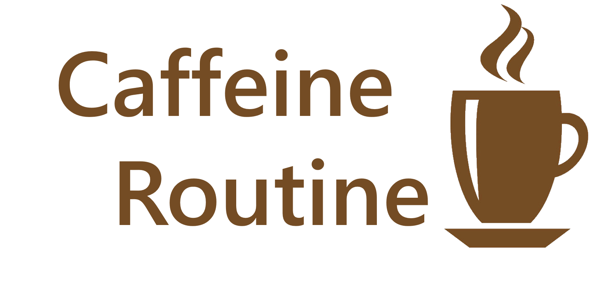

 A Desktop Application to remotely control your Keurig Coffee Maker.
For Senior Capstone, CS4366, Spring 2017.
Designed with Electron.
Heat Keurig!
Brew Now!
Schedule A Cup!
Schedule picker goes here.
Coffee Time? (date and time):
Submit.